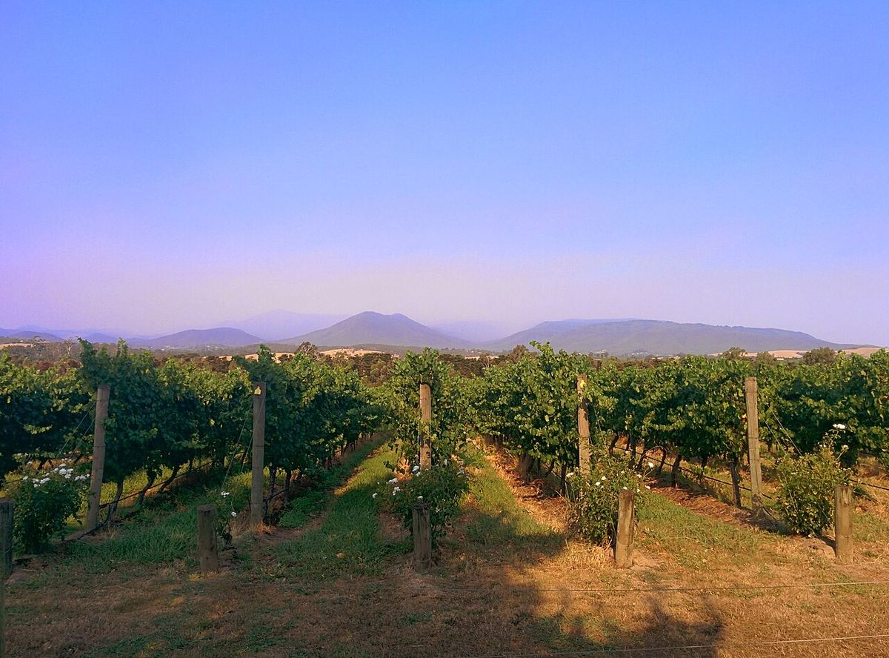

Yarra Valley
El valle del Yarra, al este de Melbourne, fue la cuna de la viticultura en Victoria. Hoy es una de las regiones de clima fresco más reputadas de Australia por su Chardonnay, su Pinot Noir y sus espumosos.

Historia
El valle del Yarra se extiende a lo largo del río del mismo nombre, a menos de una hora en coche del centro de Melbourne. Las primeras vides de Victoria se plantaron aquí en 1838, cuando los hermanos Ryrie establecieron la finca de Yering. En las décadas siguientes llegaron colonos de origen suizo, como las familias de Castella y de Pury, que fundaron fincas como Yeringberg y St Huberts, y a finales del siglo XIX los vinos del valle obtuvieron reconocimiento en exposiciones internacionales.
A comienzos del siglo XX la viticultura entró en declive por la demanda de vinos generosos, más fáciles de producir en zonas cálidas, por las dificultades económicas y por el cambio de los usos agrícolas, y a mediados de siglo apenas quedaban viñas en el valle. El renacimiento comenzó a finales de los años sesenta, cuando un grupo de pioneros, muchos de ellos médicos y profesionales de Melbourne, replantó viñedos y creó bodegas como Yarra Yering y Mount Mary. Desde los años ochenta llegaron también grandes inversiones, incluida una filial de una casa de Champagne dedicada a los espumosos.
Clima y suelos
El clima es fresco y relativamente húmedo para Australia, con una larga temporada de maduración. Las diferencias de altitud y orientación crean muchos mesoclimas: el fondo del valle y las laderas bajas son más cálidos y se adaptan bien al Cabernet Sauvignon y al Shiraz, mientras que las zonas más altas del este, conocidas como Upper Yarra, son frescas y se reservan sobre todo para el Chardonnay, el Pinot Noir y las bases de espumoso. Hay dos grandes tipos de suelo: los francos arcillosos grises y arenosos, de origen sedimentario, en la parte baja y occidental, y los suelos rojos volcánicos, profundos y fértiles, en la parte alta del valle.
Estilos
El Chardonnay del Yarra se ha convertido en una referencia del nuevo estilo australiano: vinos tensos, con fruta cítrica y de hueso, notas minerales y un uso cuidadoso del roble. El Pinot Noir da tintos ligeros a medianos, perfumados y de taninos finos. El Cabernet Sauvignon y las mezclas de tipo bordelés, junto con un Shiraz de estilo fresco y pimentado, a veces cofermentado con un poco de Viognier, mantienen una larga tradición. Los espumosos de método tradicional, elaborados con Chardonnay y Pinot Noir, son otra especialidad importante, y el valle se ha convertido en un destino enoturístico muy visitado desde Melbourne.